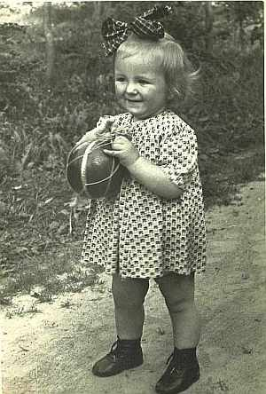
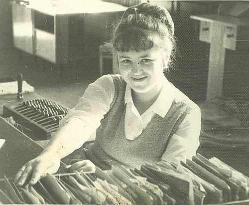

Цуприк (Высоцкая) Эльжбета ВацлавовнаРодилась 30.05.1948 в.г.Гродно, Беларусь. Работала экономистом в ОПТУС (областное производственно-техническое управление связи) в Гродно, позже в администрации УП Гроднооблпочта. в 1975 вышла за муж за Цуприка Николая. |

в 2 года за работой на почте: Центральное отделение Гродно, 1970  вместе с подругой 1973 г. |